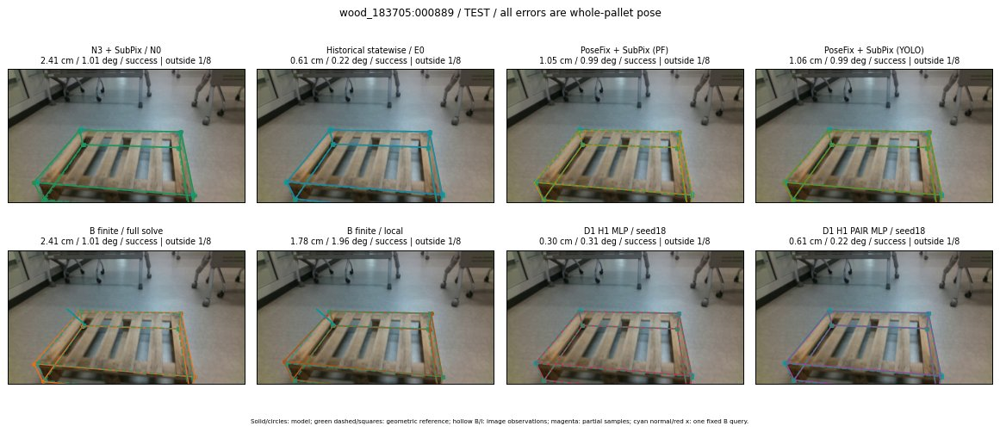

Whole-pallet pose errors; reference is a fixed geometric annotation, not certified physical GT.

Scores are uncalibrated logits. N0 retention is a numerical pose alias; it differs from H0 none or B fallback. B/I and profiles in baseline/B panels are original observations; L panels use new D1 observations. Only one deterministic supported B query is shown in a thumbnail; full support counts are below. Grey privacy rectangles edit the display copy only and are unrelated to O states; all observations were measured on original pixels. Thumbnails use JPEG quality85; detailed scientific panels are PNG.
| Method | Whole pose / cm, deg | Actual source | Selected ID | Score | Archived candidates | Eligible | N0 retained | H0 none | Fallback | Finite profiles |
|---|---|---|---|---|---|---|---|---|---|---|
| Raw YOLO + F | 1.98 cm / 1.66 deg / success | OTHER | None | N/A | N/A | N/A | False | N/A | None | N/A |
| N3 + SubPix / N0 | 2.41 cm / 1.01 deg / success | N0 | None | N/A | N/A | N/A | True | N/A | None | N/A |
| Historical statewise / E0 | 0.61 cm / 0.22 deg / success | E0_REGENERATED | None | N/A | N/A | N/A | False | N/A | False | N/A |
| PoseFix raw | 1.18 cm / 1.00 deg / success | OTHER | None | N/A | N/A | N/A | False | N/A | None | N/A |
| PoseFix + SubPix (PF) | 1.05 cm / 0.99 deg / success | OTHER | None | N/A | N/A | N/A | False | N/A | False | historical support records 9; finite audit N/A |
| PoseFix + SubPix (YOLO) | 1.06 cm / 0.99 deg / success | OTHER | None | N/A | N/A | N/A | False | N/A | False | historical support records 9; finite audit N/A |
| Historical L, seed18 | 1.05 cm / 0.90 deg / success | OTHER | NEW/AB/SWAPPED_WD/h3/G10/ORIGINAL_WD/sample/0/PROPOSED_NATIVE_YAW_3 | N/A | 40 | 40 | False | False | False | N/A |
| Historical B fixed bank | 0.30 cm / 0.31 deg / success | OTHER | G10/ORIGINAL_WD/sample/1 | N/A | N/A | N/A | False | N/A | False | N/A |
| Historical B full | 1.05 cm / 0.90 deg / success | OTHER | NEW/B/ORIGINAL_WD/h0/G10/ORIGINAL_WD/sample/0/PROPOSED_NATIVE_YAW_0 | N/A | N/A | N/A | False | N/A | False | N/A |
| Historical edge full | 6.71 cm / 12.19 deg / failure | OTHER | NEW/edge/ORIGINAL_WD/h0/G10/ORIGINAL_WD/sample/0/PROPOSED_NATIVE_YAW_0 | N/A | N/A | N/A | False | N/A | False | N/A |
| Historical AB full | 1.05 cm / 0.90 deg / success | OTHER | NEW/AB/ORIGINAL_WD/h0/G10/ORIGINAL_WD/sample/0/PROPOSED_NATIVE_YAW_0 | N/A | N/A | N/A | False | N/A | False | N/A |
| B finite / fixed bank | 2.41 cm / 1.01 deg / success | N0 | N0 | N/A | N/A | N/A | True | N/A | True | N/A |
| B finite / full solve | 2.41 cm / 1.01 deg / success | N0 | N0 | N/A | N/A | N/A | True | N/A | True | N/A |
| B finite / local | 1.78 cm / 1.96 deg / success | OTHER | NEW_FINITE/B/ORIGINAL_WD/h0/N0_LOCAL_SAME_PHYSICAL_POSE/ORIGINAL_WD | N/A | N/A | N/A | False | N/A | False | 29/29 |
| Edge finite / full solve | 2.41 cm / 1.01 deg / success | N0 | N0 | N/A | N/A | N/A | True | N/A | True | N/A |
| D0 H0 MLP / seed18 | 0.30 cm / 0.31 deg / success | OTHER | P1/ORIGINAL_WD/selected | 5.066256999969482 | 12 | 12 | False | False | False | N/A |
| D0 H0 MLP / seed19 | 0.30 cm / 0.31 deg / success | OTHER | P1/ORIGINAL_WD/selected | 5.984789848327637 | 12 | 12 | False | False | False | N/A |
| D0 H0 MLP / seed20 | 0.30 cm / 0.31 deg / success | OTHER | P1/ORIGINAL_WD/selected | 3.4944660663604736 | 12 | 12 | False | False | False | N/A |
| D0 H1 MLP / seed18 | 0.30 cm / 0.31 deg / success | OTHER | P1/ORIGINAL_WD/selected | 0.5012437701225281 | 12 | 12 | False | False | False | N/A |
| D0 H1 MLP / seed19 | 0.30 cm / 0.31 deg / success | OTHER | P1/ORIGINAL_WD/selected | 0.38008642196655273 | 12 | 12 | False | False | False | N/A |
| D0 H1 MLP / seed20 | 0.30 cm / 0.31 deg / success | OTHER | P1/ORIGINAL_WD/selected | -0.3158797025680542 | 12 | 12 | False | False | False | N/A |
| D1 H0 MLP / seed18 | 0.30 cm / 0.31 deg / success | OTHER | P1/ORIGINAL_WD/selected | 8.089400291442871 | 12 | 12 | False | False | False | N/A |
| D1 H0 MLP / seed19 | 0.30 cm / 0.31 deg / success | OTHER | P1/ORIGINAL_WD/selected | 8.202945709228516 | 12 | 12 | False | False | False | N/A |
| D1 H0 MLP / seed20 | 0.30 cm / 0.31 deg / success | OTHER | P1/ORIGINAL_WD/selected | 7.1576619148254395 | 12 | 12 | False | False | False | N/A |
| D1 H1 MLP / seed18 | 0.30 cm / 0.31 deg / success | OTHER | P1/ORIGINAL_WD/selected | 1.5805870294570923 | 12 | 12 | False | False | False | N/A |
| D1 H1 MLP / seed19 | 0.30 cm / 0.31 deg / success | OTHER | P1/ORIGINAL_WD/selected | 1.1630035638809204 | 12 | 12 | False | False | False | N/A |
| D1 H1 MLP / seed20 | 0.30 cm / 0.31 deg / success | OTHER | P1/ORIGINAL_WD/selected | 2.5367558002471924 | 12 | 12 | False | False | False | N/A |
| D1 H1 ROLE AFFINE / seed18 | 2.41 cm / 1.01 deg / success | N0 | N0 | 3.0270140171051025 | 12 | 12 | True | False | False | N/A |
| D1 H1 ROLE AFFINE / seed19 | 2.41 cm / 1.01 deg / success | N0 | N0 | 1.7420517206192017 | 12 | 12 | True | False | False | N/A |
| D1 H1 ROLE AFFINE / seed20 | 2.41 cm / 1.01 deg / success | N0 | N0 | 2.6428492069244385 | 12 | 12 | True | False | False | N/A |
| D1 H1 PAIR MLP / seed18 | 0.61 cm / 0.22 deg / success | E0_REGENERATED | E0_REGENERATED | 0.44508862495422363 | 12 | 2 | False | False | False | N/A |
| D1 H1 PAIR MLP / seed19 | 0.61 cm / 0.22 deg / success | E0_REGENERATED | E0_REGENERATED | 1.1332941055297852 | 12 | 2 | False | False | False | N/A |
| D1 H1 PAIR MLP / seed20 | 0.61 cm / 0.22 deg / success | E0_REGENERATED | E0_REGENERATED | 1.1394048929214478 | 12 | 2 | False | False | False | N/A |
| D1 H1 PAIR ROLE AFFINE / seed18 | 0.61 cm / 0.22 deg / success | E0_REGENERATED | E0_REGENERATED | 1.3607743978500366 | 12 | 2 | False | False | False | N/A |
| D1 H1 PAIR ROLE AFFINE / seed19 | 0.61 cm / 0.22 deg / success | E0_REGENERATED | E0_REGENERATED | 1.673279881477356 | 12 | 2 | False | False | False | N/A |
| D1 H1 PAIR ROLE AFFINE / seed20 | 0.61 cm / 0.22 deg / success | E0_REGENERATED | E0_REGENERATED | 1.1799428462982178 | 12 | 2 | False | False | False | N/A |
| Regenerated common E0 | 0.61 cm / 0.22 deg / success | E0_REGENERATED | E0_REGENERATED | N/A | N/A | N/A | False | N/A | False | N/A |